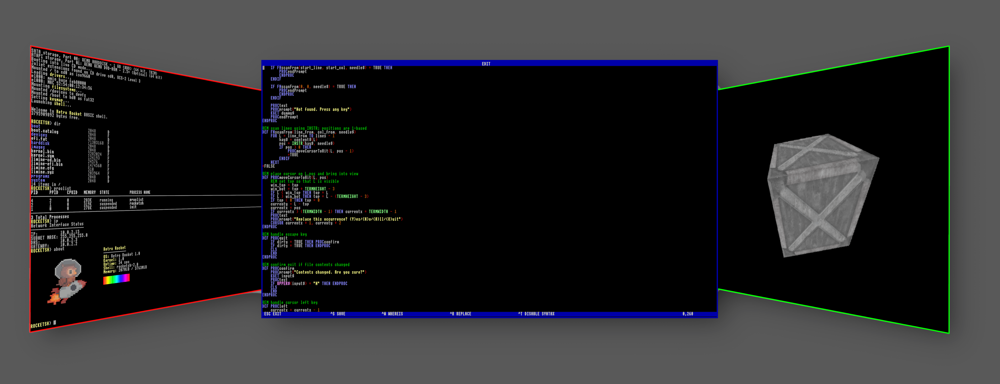

|
Retro Rocket OS
|
|
Retro Rocket OS
|
Retro Rocket is a small operating system in the spirit of the 1980s micros. Something you can actually understand, not just use.

It runs on real x86-64 hardware, has its own programming language for the shell and for writing programs, and doesn’t hide much. Everything is there for you to play with if you want to dig into it.
You can sit down with it, try things, break things, and see what happens. The idea is that you’re always close to what the system is actually doing, not several layers removed from it.
Getting into low-level stuff can usually be a bit of a wall. You usually end up fighting tools, languages, and systems that assume you already know the answer. This is a more direct way in.
Retro Rocket meets you in the middle, letting you dive into to the guts of your computer.